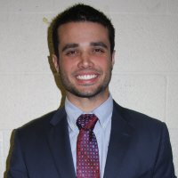
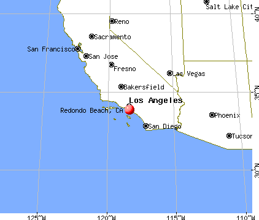

Jeffrey McLemore


Jeffrey McLemore
I am an upperclassman currently pursuing my B.S. of Computer Science Engineering with a Minor in Mathematics at the University of Florida in Gainesville, Florida. Much of my time is devoted to Theta Tau, a professional engineering fraternity. However, you may also find me at Society of Hispanic Engineers (SHPE) meetings, as well as lurking about the dark, dusty halls of the Computer Science building where I also on occasion participate in events with the Programming Team and the Association of Computing Machinery. Previously, I attended the Honors College at Broward College in Davie, Florida where I successfully obtained my Associates of Arts with Highest Honors. Most of my time spent here was with Phi Theta Kappa, an extremely active honors society on campus, where I served as Vice President of Membership. I often also participated in meetings with the Broward College Math team as a way to broaden my critical thinking skills.
I chose computer science because I love waking up every single day and learning something new. There's a bit of a never-ending-story when it comes to this profession. Every day there's somebody working to update the system. So you have to keep up to stay cutting edge. I'm constantly looking for ways to reinvent and improve myself and troubleshooting all areas of my life like a program. I wouldn't have it any other way. When I'm not at school you'll catch me traveling the U.S.A. and attending professional conferences. I love to network as much as I can and talk to people from every single company, even if I don't have plans on working for them. Personally, I think this is the best way to broaden your horizons. I've found that it helps me to think outside the box and learn about how other perspectives can help sharpen my own.

My first professional experience was in Ocala, Florida at Veterans Trading Company during the summer of 2015. They are a supply chain solutions company that primarily caters to federal prime contractors such as Lockheed Martin. I worked as a Systems Engineer with a focus on software development and databases in the quality department directly under the Director of Engineering. My first project digitalized their warehouse receiving operations. I created software that allowed the receiving operators to quickly bar code scan parts and find them in a database. This allowed for more accurate inspections when searching for counterfeit and fraudulent parts. Afterwards, I had the opportunity to prepare documentation and present my project to an auditor personally. It was a greatly unique experience, and I'm happy to say that I successfully helped the company pass two audits: AS9100 and AS6081. Afterwards, the president of the company gave me a special task to create for him a web app to replace a legacy application. On a time crunch, I managed to finish this just by the end of my internship.. I had the opportunity to present this to a board of executives in the company, all of which found my second project to be very successful as well. I'm very grateful for the opportunity to have worked at this company. I learned countless lessons that I wouldn't have anywhere else. VTC - thank you, and best of luck.
What's up next for me? This summer I'll be working unmanned systems as a software engineer at Northrop Grumman Aerospace Systems in Redondo Beach, California. I had the pleasure of meeting them in Pasadena, California during the HENAAC conference. I'm one of the few people that has the blessing of being able to say that I spoke to every company there, and received the offer I wanted. I'm hoping to get in as much web and mobile development work in as possible on my own time as well. I have some big projects in store for my fraternity to make it an even better and more professional organization - but that's all I'll say for now. Stay tuned to my GitHub for some more open source contributions as well.
